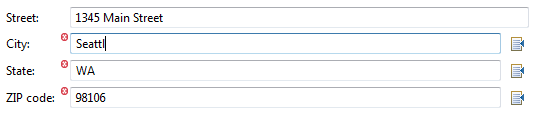

Sapphire Declarative UI Framework allows you take advantage of the time spent creating and annotating your model with Sapphire Modeling Framework by making it very easy to create high quality UI for editing the model with minimal amount of work.
This is not "push a button and get an editor" solution. The goal is to give you full control where you need it while eliminating tedious and repetitive portions. Consider the following model fragment that represents a basic address block:
// *** Street ***
@XmlBinding( path = "street" )
@LabelText( "streetLabel" )
@NonNullValue
ValueProperty PROP_STREET = new ValueProperty( TYPE, "Street" );
StringValue getStreet();
void setStreet( String street );
// *** City ***
@XmlBinding( path = "city" )
@LabelText( "cityLabel" )
@NonNullValue
@ValuesProvider( CityNameValuesProvider.class )
@DependsOn( { "ZipCode", "State" } )
ValueProperty PROP_CITY = new ValueProperty( TYPE, "City" );
StringValue getCity();
void setCity( String city );
// *** State ***
@XmlBinding( path = "state" )
@LabelText( "stateLabel" )
@NonNullValue
@ValuesProvider( StateCodeValuesProvider.class )
@DependsOn( { "ZipCode", "City" } )
ValueProperty PROP_STATE = new ValueProperty( TYPE, "State" );
StringValue getState();
void setState( String state );
// *** ZipCode ***
@XmlBinding( path = "zip" )
@LabelText( "zipCodeLabel" )
@NonNullValue
@ValuesProvider( ZipCodeValuesProvider.class )
@DependsOn( { "State", "City" } )
ValueProperty PROP_ZIP_CODE = new ValueProperty( TYPE, "ZipCode" );
StringValue getZipCode();
void setZipCode( String zipCode );The above fully describes the semantics. Dependencies between properties are spelled out using the @DependsOn annotation. Constraints are attached in the form of @NonNullValue and @ValueProvider annotations. Even a human-frendly name for each property is specified using the @LabelText annotation.
So what would the UI code look for this? As simple as this:
<property-editor>IAddress.PROP_STREET</property-editor>
<property-editor>IAddress.PROP_CITY</property-editor>
<property-editor>IAddress.PROP_STATE</property-editor>
<property-editor>IAddress.PROP_ZIP_CODE</property-editor>All that you have to tell the framework is which properties to render editors for. The result looks like this:
The framework rendered a text box for each of the string properties. It also rendered browse buttons for City, State and Zip as values providers were specified for those properties. The values provider is used in several ways. It is used to provide a browse box and it is used to validate entered values. The little red icons next to text fields are error indicators. Validation is provided automatically through the model. The City, State and Zip fields as cross-linked with each other. As you type in one, the other are re-validated. You get all of this without writing a single line of SWT or JFace code.
The editor framework is located in the org.eclipse.sapphire.ui plugin. You will need to add a dependency on this plugin.
The second step is to create your editor. The framework contains a base editor class that you will extend. Here is roughly what you will need to do:
package sample.editor;
import org.eclipse.sapphire.modeling.IModel;
import org.eclipse.sapphire.modeling.ModelStore;
import org.eclipse.sapphire.ui.SapphireEditorForXml;
public final class MyEditor extends SapphireEditorForXml
{
public MyEditor()
{
// The constructor takes the plugin id and an editor id (you make this up)
// as arguments.
super( "sample", "MyEditor" );
// Specifies the path to the editor definition file. Writing this file will
// be covered later in the document. For now, just pick a location and name.
// The path must be relative to the root of the plugin specified above.
setEditorDefinitionPath( "editor/MyEditor.def" );
// Specify which node in the tree should get the initial selection. The
// node labels that are specified are localizable, so make sure to account
// for that. Nested nodes can be specified by using path notation with '/'
// as the separator. Note that this setting only takes affect the first
// time the editor is opened in a workspace. The editor will remember last
// selected node from the previous session.
setDefaultInitialNodePath( "General" );
// Set the text that will be displayed in the banner are of the main page.
setPageHeaderText( "My Editor" );
}
protected final IModel createModel( final ModelStore modelStore )
{
// Construct and return your model. You will be using the provided model store.
// This is your live hookup to the XML editor.
...
}
}The next step is to register your editor with Eclipse. You will need to add something similar to the following extension your plugin.xml:
<extension point="org.eclipse.ui.editors">
<editor
class="sample.editor.MyEditor"
default="true"
filenames="sample.xml"
icon="images/sample.gif"
id="sample.editor.MyEditor"
name="My Editor"/>
</extension>This section documents the syntax used to describe editors to the Sapphire Editor Framework. The schema for this file can be found in the sapphire.ui plugin. Assuming that Sapphire Framework plugins are present in the Eclipse installation that you are using for development, this schema will be available in the XML Catalog and automatically discovered.
Each editor definition file has the following basic structure:
<definition>
[imports]
[editor]
[content-templates]
[nodes]
</definition>Imports directives allow references to external resources (such as classes, properties, images and other definition files) to be resolved. Here is what the syntax looks like:
<!-- Any number of import directives can be specified in a definition file. -->
<import>
<!-- Every import directive must specify the symbolic name of the OSGi bundle from
which the resources are to be imported from. -->
<bundle>...</bundle>
<!-- Use the "package" element to import Java packages. -->
<package>...</package>
<!-- Use the "definition" element to import other Sapphire UI definitions. This is
useful for re-using definitions in multiple contexts and for breaking up very
large definitions across multiple files. -->
<definition>...</definition>
</import>The framework adds the following import directive automatically. These resources do not need to be imported in your definition files.
<import>
<bundle>org.eclipse.sapphire.ui</bundle>
<package>org.eclipse.sapphire.ui.actions</package>
<package>org.eclipse.sapphire.ui.xml</package>
</import>The editor definition element defines the top-level structure of the editor. This is where you specify what your top-level nodes are and what editor-level actions you want to expose. Note that only one editor definition can exist in a definition file (when considered together with the imported definitions).
<editor>
<!-- The following three elements control editor-level actions contributed to
various contents in the editor. See the section on Actions for more
information. -->
<header-toolbar> <!-- optional -->
[actions]
</header-toolbar>
<navigation-toolbar> <!-- optional -->
[actions]
</navigation-toolbar>
<navigation-menu> <!-- optional -->
[action]
</navigation-menu>
<!-- The syntax for this element is identical to the syntax for the node element.
See the section on node definitions for more information. The only thing that
is different about the root node is that it does not make sense to specify
a label, an image or actions for this node. The root node is not directly
accessible by users. The root node's children become the top-level nodes in
the editor's navigation tree. -->
<root-node>
...
</root-node>
</editor>Nodes are the primary means of navigation through editor content. Nodes are displayed on the left-hand-side of the editor in a tree. Each node can have one or more sections associated with it. The sections are where the property editors will be located. The sections are rendered and displayed when the user selects a node in the tree.
Nodes are defined using the following syntax:
<node>
<!-- Every top-level node must have an id. -->
<id>...</id>
<!-- Every node is associated with some model element. When creating a child node,
you have the option to either associate the node with the same model element
that the parent is associated with or you can use the property element
to specify a property in the parent node's model element to use in
locating this node's context. The referenced property must be a ClassProperty.
Top-level nodes default to being associated with the model itself (as the root
of the model elements tree). You can either stick with that association or
specify the property that should be used to retrieve the context model element. -->
<property>...</property>
<!-- Every node must have a label. You can either specify a static label or indicate
that the label should be derived from a value of the specified property. The
property is resolved relative to the node's context model element. -->
[choice]
<label>...</label>
<dynamic-label>
<property>...</property>
<null-value-label>...</null-value-label>
</dynamic-label>
[choice]
<!-- Image to use for the node. The image path is resolved with the help of the
import directives. The path specified here should be relative to the root
of the bundle that the image is contained in. If not specified, the framework
will look for images attached to the context model element type with
the @AttachedImage annotation. If the annotation is missing, a default
image will be used for the node. -->
<image>...</image>
<!-- Actions can be attached to a node. These will be surfaced to the user
as buttons in the toolbar above the navigation tree when the node is selected
and as navigation tree context menu items. See the section on Actions for
more information -->
[actions]
<section> <!-- one or more -->
<label>...</label> <!-- defaults to node label if not specified -->
<description>...</description> <!-- optional -->
<!-- Actions can be attached to a section. These will be surfaced to the user as
buttons in the section header toolbar. See the section on Actions for more
information. -->
[actions]
<content>
[section-content]
</content>
</section>
<!-- A node can have any number of children. You can define a child node statically
by providing a nested "node" element that follows the same syntax as the top-level
nodes or you can specify that nodes should be created based on model elements
retrieved from a list property. Any number of "node" and "node-list" declarations
can be weaved together to specify children of a node. -->
[choice]*
<node/>
<node-list>
<!-- Specifies the property from the node's context element that should be
used to derive child elements. This must be a list property. -->
<property>...</property>
<!-- The node-template element specifies how to create a node for a list element.
If the list is homogeneous (contains only one type of model element), you
will need to provide one node template. If the list heterogeneous, you will
need to provide a different node template for each type. -->
<node-template>
<!-- Specifies the model element type that this template applies to. Can be
omitted for homogeneous lists. The value of this element is a class name
that is resolved with the help of the import directives. -->
<model-element-type>..</model-element-type>
<!-- The rest of the node-template element syntax is identical to the node
element syntax. -->
</node-template>
</node-list>
[choice]
</node>This is by far the most common section content element. You are basically asking the editor to render widgets that are appropriate for editing the specified property and to setup data binding between those widgets and the property. The simplest and the most common usage of this element is as follows:
<property-editor>IBikeRide.PROP_NAME</property-editor>The property name is literally the name of the model element interface in Java followed by the field name that holds the property definition. The editor definition parser will use reflection in order to locate this property at runtime. Make sure that you've specified a package import that will make this possible.
The above is a simplified form. The same property editor definition can be expressed as follows:
<property-editor>
<property>IBikeRide.PROP_NAME</property>
</property-editor>Why would you want to do that? Well, in some cases, it is necessary to provide additional guidance (or hints) to editor renderer to help it in creating a property editor of exactly the form that you need. Hints are specified using nested hint elements like so:
<property-editor>
<property>IBike.PROP_COMPONENTS</property>
<hint>
<name>show.label</name>
<value>false</value
</hint>
<hint>
<name>columns</name>
<value>IBikeComponent.PROP_MANUFACTURER,IBikeComponent.PROP_NAME</value>
</hint>
</property-editor>Here is the list of hints that are currently supported:
| Hint Name | Relevance | Description |
|---|---|---|
| show.label | all except boolean properties | Set this to false if you don't want to display a label for the property editor. This will cause the property editor to stretch and fill the space typically occupied by the label. |
| show.label.above | all except boolean properties | The default behavior is to display the label to the left of the property editor. You can use this hint to force the label to display above the property editor instead. This is particularly useful for list properties (they render as tables) or for long string properties (they render as multi-line text boxes). |
| show.header | list properties | Controls whether the column header is shown when editing a list property in a table control. Column headers enable additional functionality (such as ability to sort), but do take up some vertical screen real estate. The default value is true (header is shown). |
| aux.text | all | A way to supply additional information about the property. A typical use of this is to provide syntax help for string properties that require values in certain format. |
| columns | list properties | When an editor is rendered for a list property, you get a table with a column for each of the properties of list entry model element. This hint is useful when it is desirable to omit certain properties or to order columns in a way that's different from the order in which properties are defined in the model element. |
| column.widths | list properties | Allows certain amount of control over how horizontal space in a table is distributed among columns. The value of this hint is a string of this form: "(int(:int)?)(,(int(:int)?))*". In particular, you specify one or two integers for each column in the table. The two integers are minimum width (in pixels) and weight. Weight is the relative importance of this column when it comes to distributing excess space. If weight is omitted, it defaults to 0, which configures a column that does not grab any excess space. For example, setting this hint to "100,100,100:1", configures a table where two first columns prefer to stay at 100 pixels, while the third column grabs all of the excess space. By default (when this hint is not provided), all columns are configured to be 100:1. Since all columns have the same weight value, the excess space is distributed equally among all columns. |
| height | list and long string properties | Overrides the amount of vertical space allocated by default to the property editor. |
| indent | all | This is mostly relevant to property editors that render across the entire width of the section (such as boolean properties that render as check boxes). By setting this to true, you can cause the editor to be aligned on the second column of the section layout. This is useful, for instance, when it is desirable to align check boxes in a section with text boxes. |
| browse.handler | all properties that render as a text box | The framework has support for providing value browsing behavior for a number of common cases, but there are times where it is necessary to supply a completely custom browse dialog for a particular property. The value of this hint is a class that extends org.eclipse.sapphire.ui.assist.BrowseHandler class. The class is resolved with the help of the import directives. |
| list properties | The framework has support for providing value browsing behavior for a number of common cases, but there are times where it is necessary to supply a completely custom browse dialog for a particular property. The value of this hint is a class that extends org.eclipse.sapphire.ui.assist.BrowseHandler class. The class is resolved with the help of the import directives. | |
| browse.only | all properties that render as a text box | Sometimes it is useful to restrict property editing to be done exclusively via the browse dialog. Setting this hint to true will lock the text box. This hint is ignored if no browse handler is available for the property in question. |
| jump.handler | all properties that render as a text box | The framework has support for providing navigation to the entity referenced by property value for a number of common cases, but there are times where it is necessary to supply a completely custom implementation for a particular property. The value of this hint is a class that extends org.eclipse.sapphire.ui.assist.JumpHandler class. The class is resolved with the help of the import directives. |
| jump.handler.[prop-name] | list properties | The framework has support for providing navigation to the entity referenced by property value for a number of common cases, but there are times where it is necessary to supply a completely custom implementation for a particular property. The value of this hint is a class that extends org.eclipse.sapphire.ui.assist.JumpHandler class. The class is resolved with the help of the import directives. |
| border | all properties that render as a text box | Gives control over rendering of the text box border. The value of this hint is true or false. By default the border is not shown for read-only properties and is shown for writable properties. This hint can be used to control the border explicitly in either situation. |
| margin.left | all properties | Allows additional padding to be added to the left margin. This is particularly useful when trying to indent controls beneath a controlling checkbox. The value of this hint is a number followed by either "px" or "u" suffix. The "px" suffix refers to actual pixels while the "u" suffix refers to standard units of spacing (as defined by the framework). The most typical value for this hint is "1u". |
| assist.contributors | all properties | Registers additional classes that will contribute content to the property editor assistance dialog. Contributor classes must extend PropertyEditorAssistContributor. Multiple contributors can be specified by separating entries with a comma. |
| suppress.assist.contributors | all properties | Provides a way to suppress property editor assist contributors provided by the system. The value of this hint is a comma-separated list of contributor ids. The ids of system contributors can be found in the PropertyEditorAssistContributor class. |
| listeners | all properties | Registers listeners that will be notified of various events in the property editor's lifecycle. For value property, the listeners are expected to extend ValuePropertyEditorListener class. For list properties, the listeners are expected to extend ListPropertyEditorListener class. |
| prefer.combo | enum properties | An enum property will by default bind to a horizonal radio buttons group if the number of enum items is three or fewer. Otherwise it will bind to a combo box. In some cases, it is desirable to force binding to use the combo box regardless and this hint allows one to do just that. |
| prefer.radio.buttons | enum properties | An enum property will by default bind to a combo box if the number of enum items is greater than three. Otherwise it will bind to a horizonal radio buttons group. In some cases, it is desirable to force binding to use the radio button group regardless and this hint allows one to do just that. |
Draws a line across the entire width of the section with an optional label.
<separator>
<label>...</label> <!-- optional -->
</separator>Adds some vertical whitespace to the section. The default amount is five pixels, but a custom amount can be specified using the the optional size element.
<spacer>
<size>...</size> <!-- optional -->
</spacer>Adds a label that stretches across the entire width of the section. The label will wrap to multiple lines if necessary.
<label>...</label>Creates nested content within a section with a labeled frame around it. This is useful for grouping related properties. A group can contain any of the elements that a section can contain.
<group>
<label>...</label>
<content>
...
</content>
</group>The with element is used when it is necessary to establish new context element by de-referencing a property in the current context. The specified property must be a class property. Unlike the group element, the with element does not have a visible effect on the UI. A new composite is not created, so the layout of this element melds with the parent.
<with>
<property>...</property>
<content>
...
</content>
</with>Creates a "page-book" effect where a series of panels appear to be overlayed on top of each other and get activated based on an external condition. There are two types of switching that the framework currently supports. You can switch based on the value of an enum property or you can switch based on current selection in a list property editor. In both cases, the property that the switching panel is bound to must have an editor located in the same section as the switching panel.
A default-panel can be specified for cases where the controller does not have an associated value (enum property value is null or the list selection is empty) or some of the values do not have any relevant content.
Here is an example that shows a typical usage of switching-panel based on the value of an enum property. This scenario comes up frequently when some properties are associated with specific values of a controlling enum property. When using enum-controller, the panel key is the name of the enum qualified with the enum type.
<property-editor>
<property>IBikeRide.PROP_TYPE</property>
<hint>
<name>show.label</name>
<value>false</value>
</hint>
</property-editor>
<separator/>
<switching-panel>
<enum-controller>
<property>IBikeRide.PROP_TYPE</property>
</enum-controller>
<panel>
<key>BikeRideType.ROAD_COMPETITIVE</key>
<content>
<property-editor>IBikeRide.PROP_DISTANCE</property-editor>
<property-editor>IBikeRide.PROP_ELEVATION_GAIN</property-editor>
<property-editor>IBikeRide.PROP_START_TIME</property-editor>
<property-editor>IBikeRide.PROP_END_TIME</property-editor>
</content>
</panel>
<panel>
<key>BikeRideType.CROSS_COUNTRY</key>
<content>
<property-editor>IBikeRide.PROP_DISTANCE</property-editor>
<property-editor>IBikeRide.PROP_ELEVATION_GAIN</property-editor>
<property-editor>IBikeRide.PROP_TRAIL_CONDITION</property-editor>
</content>
</panel>
<panel>
<key>BikeRideType.DOWN_HILL</key>
<content>
<property-editor>IBikeRide.PROP_DISTANCE</property-editor>
<property-editor>IBikeRide.PROP_TRAIL_CONDITION</property-editor>
<property-editor>IBikeRide.PROP_TRAIL_TECHNICAL_RATING</property-editor>
</content>
</panel>
<panel>
<key>BikeRideType.COMMUTE</key>
<content>
<property-editor>IBikeRide.PROP_DISTANCE</property-editor>
</content>
</panel>
<default-panel>
<content>
<label>No applicable details.</label>
</content>
</default-panel>
</switching-panel>Here is an example that shows a typical usage of switching-panel based on list selection. In this case, one of the properties of the list element is a long string, so it's not practical to edit it in the table. Instead, it is displayed beneath the table when the user selects an item in the table. When using list-selection-controller, the panel key is the Java type of the list element. If the list is heterogeneous, different panels can be supplied for different element types.
<property-editor>
<property>IBike.PROP_COMPONENTS</property>
<hint>
<name>show.label</name>
<value>false</value>
</hint>
<hint>
<name>columns</name>
<value>IBikeComponent.PROP_MANUFACTURER,IBikeComponent.PROP_NAME</value>
</hint>
</property-editor>
<switching-panel>
<list-selection-controller>
<property>IBike.PROP_COMPONENTS</property>
</list-selection-controller>
<panel>
<key>IBikeComponent</key>
<content>
<property-editor>
<property>IBikeComponent.PROP_DESCRIPTION</property>
<hint>
<name>show.label.above</name>
<value>true</value>
</hint>
</property-editor>
</content>
</panel>
</switching-panel>Creates a hyperlink that activates an action. See the Actions section for more information.
When all else fails, the framework provides a way embed a piece of custom UI into the editor definition. The specified class must extend org.eclipse.sapphire.ui.DynamicSectionElementFactory class.
<custom>
<class>...</class>
</custom>The framework has support for contributing and controlling actions at various places in the editor. Actions are contributed at either editor, node or section level. The editor-level actions are always available regardless of where the user has navigated to. The node-level actions are only available when the node they are attached to is selected. Similarly, section-level actions are only accessible when the corresponding section is displayed.
To implement an action, you start out by extending org.eclipse.sapphire.ui.actions.Action class. To make it easier to access parameters holding contextual information for various action levels, a set of conviencies classes are also provided that you can extend instead of the base Action class: EditorAction, NodeAction and SectionAction.
Let's take a look at a sample node-level action that counts children of the node and displays the result in a dialog box.
import org.eclipse.sapphire.ui.actions.NodeAction;
import org.eclipse.sapphire.ui.internal.DynamicNode;
import org.eclipse.jface.dialogs.MessageDialog;
import org.eclipse.osgi.util.NLS;
import org.eclipse.swt.widgets.Shell;
public final class CountAction extends NodeAction
{
// Action ids do not have to follow a certain format. However, all of the actions
// that are provided by the Sapphire framework use the convention of prefixing
// the action id with one of "editor:", "node:" or "section:" to make it easier
// identify the scope of the action.
public static final String ACTION_ID = "node:count";
public CountAction()
{
setId( ACTION_ID );
setLabel( "Count" );
setImage( );
}
@Override
public boolean isEnabled()
{
// The default implementation of this method always returns true, but you can
// override this to provide custom logic.
return true;
}
@Override
protected Object run( final Shell shell )
{
final DynamicNode node = getNode();
final int count = node.getChildNodes().size();
final String message
= "Node \"" + node.getLabel() + "\" has " + String.valueOf( count ) + " children";
MessageDialog.openInformation( shell, "Count", message );
return null;
}
}Once you have written your custom action, it is time to add it to your editor definition. Let's take a look at what the syntax for that looks like.
<actions>
<!-- In certain contexts, the Sapphire framework contributes default actions without the
framework user explicitly declaring them. In some situations, it may be necessary
to suppress these actions in a particular context. The suppress-default-actions
element accomplishes just that. -->
<suppress-default-actions/>
<!-- In some scenarios, you may want to override a default action supplied by the framework
without fully suppressing all of the default actions. This typically comes up for the
node:add action, when you want to provide a browse dialog or something similar. -->
<override> <!-- zero or more -->
<id>...</id> <!-- required. the id of the action that you want to override -->
<action>
<id>...</id> <!-- optional -->
<label>...</label> <!-- optional -->
<class>...</class> <!-- required -->
</action>
</override>
<!-- Declares a single action group. It is often useful to group similar actions together.
The system will place separators between actions in different groups when rendering
the UI (toolbars or menus). -->
<action-group> <!-- zero or more -->
<!-- Declares a single action. The class element is required. The import directives
are used to resolve the class, so make sure to import the package first. The id
and label attributes are optional. Typically, the action implementation will set
these, but you can override the values specified by the implementation by providing
different values here. -->
<action> <!-- zero or more -->
<id>...</id> <!-- optional -->
<label>...</label> <!-- optional -->
<class>...</class> <!-- required -->
</action>
</action-group>
</actions>The above syntax specification describes the full form, but syntax shorthands are provided for common scenarios. In particular, the "actions" element can be eliminated if it is not necessary to use the "suppress-default-actions" or the "override" elements. Similarly, if you are only declaring a single group of actions, you can skip the "action-group" element. The actions declared without an explicit group will be grouped together into an automatically created group.
The following four declarations are semantically identical. In order to make your definitions easier to read, it is recommended that you use the shortest form possible for your situation.
<actions>
<action-group>
<action>
<class>MyAction1</class>
</action>
<action>
<class>MyAction2</class>
</action>
</action-group>
</actions><actions>
<action>
<class>MyAction1</class>
</action>
<action>
<class>MyAction2</class>
</action>
</actions><action-group>
<action>
<class>MyAction1</class>
</action>
<action>
<class>MyAction2</class>
</action>
</action-group><action>
<class>MyAction1</class>
</action>
<action>
<class>MyAction2</class>
</action>It is often desirable to embed a hyperlink that executes an action when activated. The Sapphire UI Framework support for this in the form of the "action-link" element that can be embedded in a section definition along with other section elements. To define an action link, you have specify the action id to bind to and the label to use for the link. The action ids are resolved by looking at the following scopes (in order): section, node, parent node (recursively to the top) and then editor. The goal is to bind the link to the most specific action with the specified id.
<action-link>
<action-id>node:add:ILion</action-id>
<label>Add a lion</label>
</action-link>The Sapphire UI Framework includes actions for certain common operations. Somes of these actions are attached by default in certain contexts and some have to be attached manually as desired. They are all located in framework packages that are imported by default.
| Action ID | Class | Description |
|---|---|---|
| editor:collapse-all | CollapseAllAction | Collapses all nodes in the navigation tree to their unexpanded state. Contributed by default to the navigation toolbar. |
| editor:expand-all | ExpandAllAction | Expands all nodes in the navigation tree. Contributed by default to the navigation toolbar. |
| ShowXmlSourceEditorPageAction | Switches to the source page. | |
| node:add | NodeAddAction | Adds a new child node beneath the context node. The context node must be defined
to include child nodes that can be added. This action is contributed by default to
every node that meets this criteria. If only one element type can be added as the
context node's child, then this action can be executed directly. Otherwise, the add
action becomes a cascading actions and only its child actions can be executed. The child
actions will have ids of the form "node:add: |
| node:delete | NodeDeleteAction | Deletes the node and the model element that it is associated with. The model element must implement IRemovableModelElement. This action is contributed by default to every node that meets this criteria. |
| node:move-down | NodeMoveDownAction | Moves the model element associated with the context node one position towards the end of the list that contains it. The model element's parent must be ModelElementList. This action is contributed by default to every node that meets this criteria. |
| node:move-up | NodeMoveUpAction | Moves the model element associated with the context node one position towards the start of the list that contains it. The model element's parent must be ModelElementList. This action is contributed by default to every node that meets this criteria. |
| section:restore-defaults | RestoreDefaultsAction | Scans all of the property editors in a section. For every value property editor, a null value is set. For every list property editor, all list elements are deleted. This has the general effect of restoring defaults and is appropriate for most situations. |
Sometimes it is useful to reuse a complex content definition in multiple different nodes. To support this scenario, it is possible to define a content template and then reference the template during node definition. Templates support substitution parameters which allow you to change the parts of the template that vary by the context of use.
Here is an example that shows a simple template being defined and used in two different nodes.
<section-content-template>
<name>bikes-list</name>
<param>
<name>property</name>
</param>
<content>
<property-editor>
<property>@{property}</property>
<hint>
<name>show.label</name>
<value>false</value>
</hint>
<hint>
<name>columns</name>
<value>IBike.PROP_NAME</value>
</hint>
</property-editor>
<switching-panel>
<list-selection-controller>
<property>@{property}</property>
</list-selection-controller>
<panel>
<key>IMountainBike</key>
<separator>
<label>Mountain bike</label>
</separator>
<property-editor>IBike.PROP_NAME</property-editor>
<property-editor>IMountainBike.PROP_FRONT_SUSPENSION</property-editor>
<property-editor>IMountainBike.PROP_REAR_SUSPENSION</property-editor>
</panel>
<panel>
<key>IRoadBike</key>
<separator>
<label>Road bike</label>
</separator>
<property-editor>IBike.PROP_NAME</property-editor>
<property-editor>IRoadBike.PROP_TRIATHLON_CONFIGURED</property-editor>
</panel>
<default-panel>
<separator>
<label>Details</label>
</separator>
<label>Select a bike above above to configure its parameters.</label>
</default-panel>
</switching-panel>
</content>
</section-content-template>
<node>
<id>bikes.owned</id>
<label>Bikes Owned</label>
<section>
<content>
<bikes-list>
<property>IBikingLog.PROP_BIKES_OWNED</property>
</bikes-list>
</content>
</section>
</node>
<node>
<id>bike.wishlist</id>
<label>Bike Wish List</label>
<section>
<content>
<bikes-list>
<property>IBikingLog.PROP_WISH_LIST</property>
</bikes-list>
</content>
</section>
</node>You can associate help content at three different levels of granularity as the requirements dictate.
The lowest level is the property. For property-level help you do not specify the context id explicitly, but rather one gets set for you based on a convention. All you need to do is provide a declaration that attaches help content to this id using standard Eclipse help system facilities. The convention that's used for generating context ids is "[TypeName]-[PropertyName]", where [TypeName] is the unqualified class name of the model element type and [PropertyName] is the name of the property that you pass into the property class constructor (not the property constant field name).
It is also possible to associate help content with an editor section or an editor page. This is done in the definition file by using the <context-help-id> element under the <section> element or the <editor-page> element as appropriate. The context help id that is specified needs to be of fully qualified form. If help content is specified like this, a help button is going to be placed in the corresponding toolbar.
These three levels of granularity form a precedence chain. When user request help for a property (such as by placing focus on the property editor and pressing F1), the system first searches for property-level help, then section-level help and finally page-level help. The first content that's found is displayed to the user. This enables the user of the framework to take advantage of lower levels of granularity on a case-by-case basis.